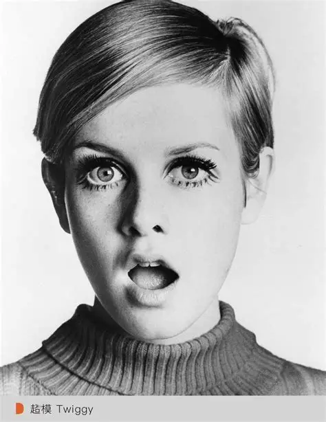
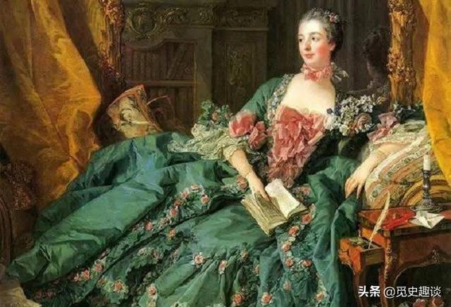

16 - 18世紀
使用 威尼斯白鉛、醋、砷。導致鉛中毒、皮膚潰爛、脫牙甚至死亡。
20世紀中
使用 氧化鋅、滑石粉、礦物油。易導致化妝品痤瘡。
現代
使用 矽靈、玻尿酸、煙醯胺。追求純素、抗敏與環境友善。

Ancient Times
使用 銻粉、煤灰、硫化汞。成分具劇毒且極具刺激性。
Modern Era
使用 植物蠟、胜肽、維他命 E。強調純淨美妝（Clean Beauty）。

Early Stage
主要含 硃砂（硫化汞）。劇毒會導致汞中毒與神經受損。
Modern Era
使用 超細礦物粉體、珍珠粉微粒。利用光學反射創造飽滿立體感。
Early Stage
使用 紅鉛、硃砂、紅汞。對人體神經與器官具致命危險。
Modern Era
使用 食品級成分、玻尿酸、植物精萃。強調安全、保濕與高效保養。
Early Stage
使用 煤灰、燒焦的軟木塞、甚至是碾碎的鉛礦石 來加深眉色。
20 世紀中
使用由 油脂與顏料混合 的硬質眉筆。
Modern Era
發展出 合成蠟、防水薄膜技術（液態染眉筆），以及含有固定毛流膠體的染眉膏。